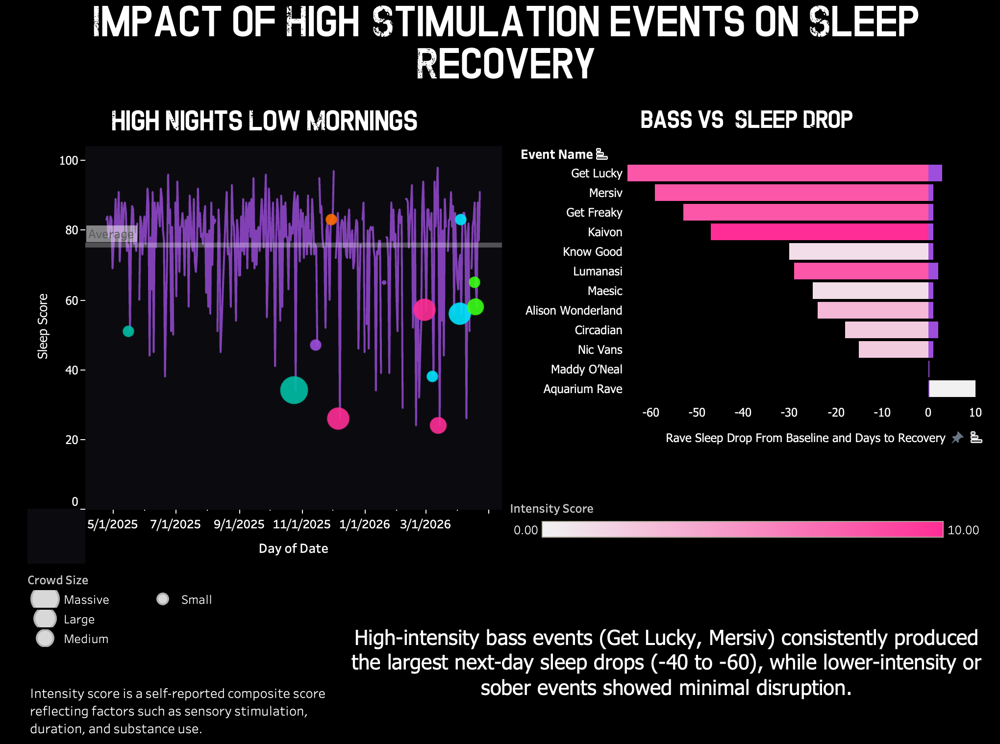

GLP-1 Outcomes Modeling Dashboard
Claims-based modeling of adherence, utilization, and downstream cost impact for employer decision-making.
I’m a healthcare data analyst who turns claims data, messy definitions, and weird human behavior into stories people can actually use. My work blends SQL, Python, dashboards, and the occasional underground-art-project impulse.
Built for technical credibility and actual human interpretation. Because a dashboard without a point is just expensive confetti.
Claims-based modeling of adherence, utilization, and downstream cost impact for employer decision-making.

Event-level behavioral dataset analyzing sleep, energy, movement, and environment after music events.
SQL + Tableau analysis of completion rates, user engagement, and course structure patterns.
My favorite analytics work does more than report what happened. It defines the question, shows the tradeoffs, and gives people enough clarity to make a move.
“The job is not to make data look impressive. The job is to make the truth harder to ignore.”

I came into analytics with a background in journalism, healthcare, and a high tolerance for ambiguity. That means I care about the story behind the metric, the assumptions behind the model, and the human decision waiting on the other side of the dashboard.
My best work happens when the question is messy: unclear definitions, imperfect data, conflicting stakeholder needs, and just enough chaos to make the answer worth chasing.